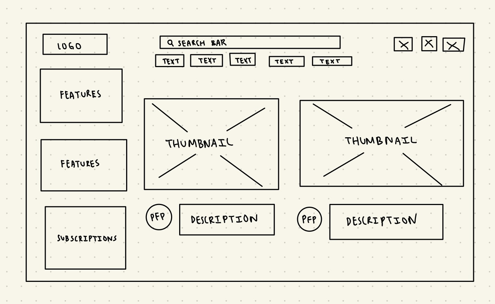
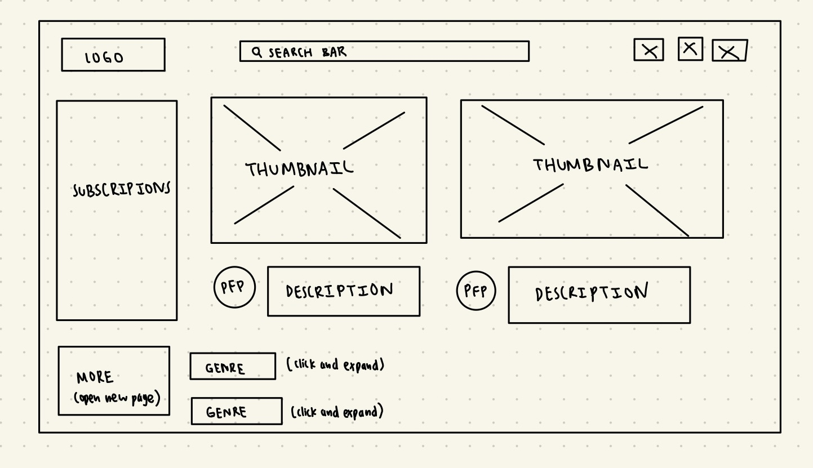

-
Using the favorite website you chose in homework 1, create a wireframe for one page of it using pen/paper, PowerPoint, or any your tool of choice. (use the 'img' tag!) Make sure to let us know what the name of your website is (Use the 'p' tag!)
This is the original YouTube website home page.

-
Try to improve the website you've chosen, and create a redesigned wireframe of one page for the same website using the principles of visual hierarchy that you learned from the article.
This is my improved version of YouTube.

-
What is the goal of the website? Who is it intended for? How does the design accomplish this? Write 2-3 sentences answering these questions. (Use the 'p' tag again!)
The goal of the website is to allow users to watch videos that they are interested in. It is intended for people of all ages who want to watch a video for any purpose, ranging from educational purpose to just to chill. The desing accomplishes this by having featured videos based off of algorithms that the user might be interested in, making it easily accessible and doesn't require heavy thinking to find something they want to watch. There are also other features such as short clips and buttons for recently liked in case a user doesn't have that much time or wants to find a video they liked before.
-
Write 2-3 sentences about what problems your redesign addressed, and how it solved them.
I felt the original design had too much information under the search bar relating to genre of videos people might want to watch. So I removed it and stuck it under the most popular videos as that is the recommended videos that users probably will go to first and included a drop down feature for the genres underneath. Additionally, I felt there was too much information on the side bar too so I left the subscriptions on the side and put everything else in more.
NOTE: Make sure to include the wireframe images in the website and don't just put it in your assets folder!
Your wireframes should look something like this: